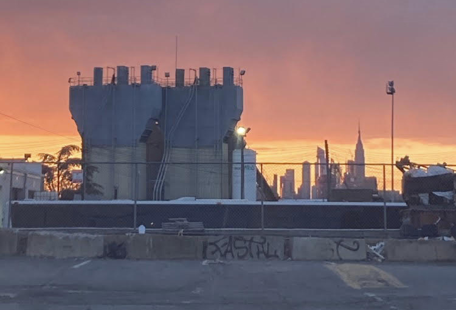

Hi, I'm Serena.
I write mostly poetry. You can find out more about that here.
I am a Notary Public in the State of New York; please email me to make an appointment.
In addition, I serve on the editorial staffs of Nat. Brut, Second Factory, The Quarterless Review, and Poetry Northwest. I enjoy working on these publications and you may enjoy reading them.
Thanks for stopping by!